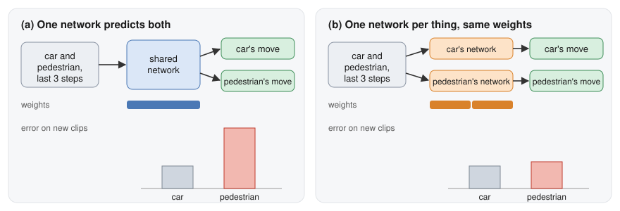
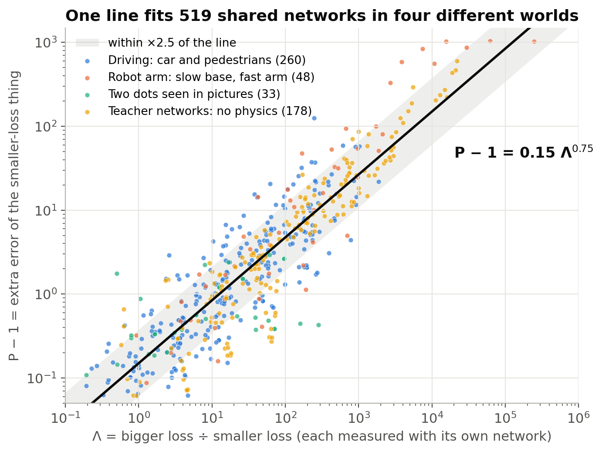
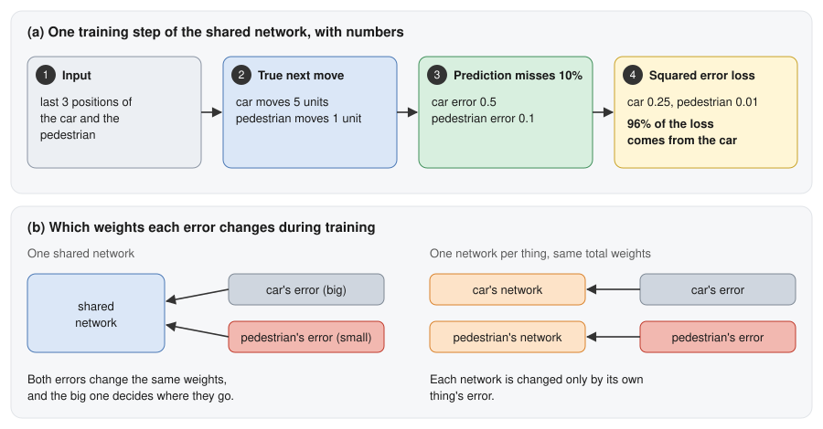
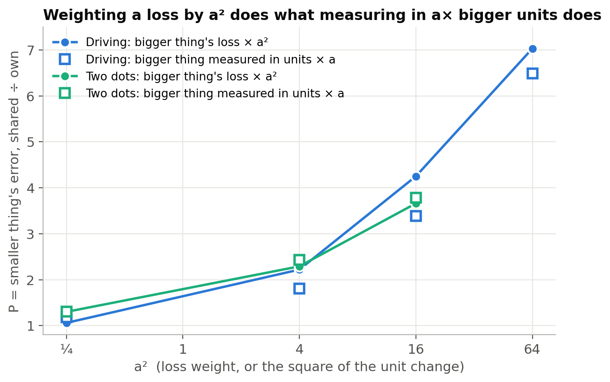
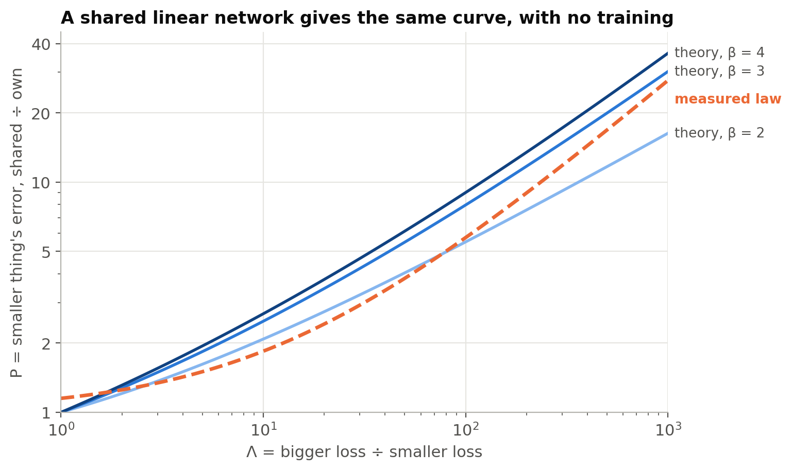
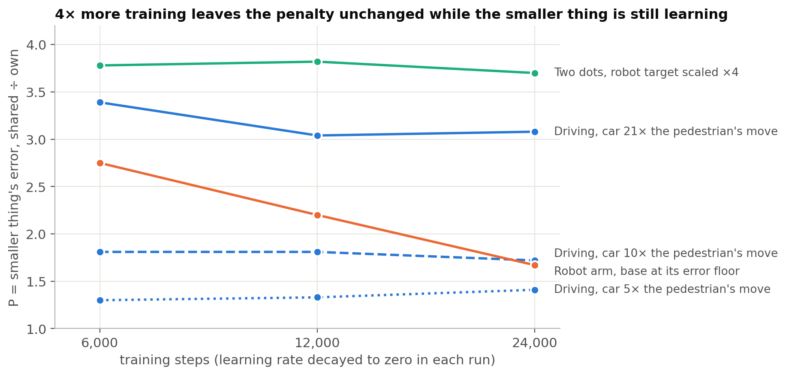
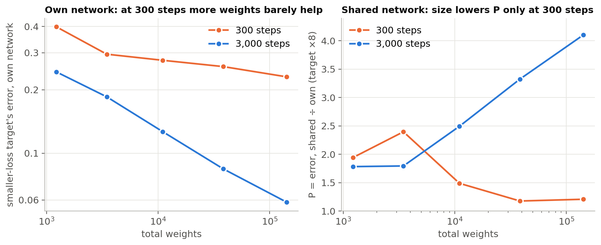

Training One Network on Two Losses Added Together Hurts the Thing With the Smaller Loss, and the Harm Grows With the Ratio of the Two Losses
One number, the ratio of the two losses, predicts how much worse; normalizing the losses removes it
Abstract. Many networks are trained on two losses added together. A self-driving world model predicts a fast car and a slow pedestrian, a robot model predicts a heavy base and a fast arm, and a mixture-of-experts language model adds a router balancing loss to its next-token loss. We show that the thing with the smaller loss is learned worse than it would be by its own network with the same total number of weights, and that one number predicts how much worse: the loss ratio Λ, the bigger loss divided by the smaller one, each measured with its own network. The smaller-loss thing's extra error grows like Λ to the power three quarters, P − 1 ≈ 0.15 Λ0.75, where P is its error in the shared network divided by its error in its own network. A loss 10 times bigger makes its error about 1.8 times larger; a loss 100 times bigger, about 6 times larger.

Figure 1. Same total weights, same data. Only the shared network makes a larger error on the thing with the smaller loss (here the pedestrian).

Figure 2. Every shared network in four worlds against the loss ratio. One line fits driving, a robot arm, two dots in pictures and a world with no physics at all.
The cause is the sum itself. Squared error counts errors in absolute size, so the bigger loss produces most of the gradient and takes most of the shared weights. A loss weight and a change of units are the same knob: multiplying a loss by a² has the same effect as measuring that thing in units a times bigger. Two proofs back the rule without any training. At its best weights, any network can only gain on the bigger loss at the smaller one's expense. A shared linear network with limited capacity hurts the smaller loss by an amount that grows slower than the loss ratio and does not depend on the network's size.
Three less general rules follow. Training longer does not fix it: the shared network learns the smaller-loss thing a fixed factor slower from start to end, so the ratio of the two errors stays the same while it is still learning. A bigger network fixes it only once the separate networks stop gaining from more weights, because only then are there spare weights to hand over. Dividing each loss by its own size, or giving each thing its own network, removes it. A constant learning rate makes the gap look larger than it is, so designs should be compared after the learning rate has decayed.
We show these rules in four small worlds: a car with pedestrians, a robot whose slow base carries a fast arm, two dots seen in pictures, and two random teacher networks with no physics. Every shared network is compared with one network per thing at equal total weights, across the gap between the two things, network size, training length, depth, learning rate, batch size, data size, optimizer, network type and loss. The direct tests swap a loss weight for a change of units, flip the size effect by changing only the training length, and check the slowdown against each thing's own learning curve.
The same sum appears wherever one network is trained on losses of different sizes: world models for self-driving cars and robots, mixture-of-experts language models with a router balancing loss, language models with auxiliary losses such as multi-token prediction, and multi-task models that predict several outputs at once. We did not test these systems. The rule predicts that in each of them the term with the smaller loss is learned worse, by an amount set by the loss ratio, unless the losses are normalized.
1. What the problem is · 2. Who adds losses together today · 3. The claims · 4. Setup · 5. Claim 1: the loss ratio sets the harm · 6. Claim 2: the cause is the sum · 7. Claim 3: theory · 8. Claim 4: training longer · 9. Claim 5: network size · 10. Claim 6: the fix · 11. Claim 7: constant learning rate · 12. Details that are not claims · 13. What to do, and where it applies · 14. Limits and next steps · Appendix A · Appendix B
1. What the problem is
A self-driving car needs to know where everything will be a moment from now. Its world model looks at the last few moments and predicts the next one: where the car itself will be, and where the pedestrian at the crossing will be. The simplest design is one network that outputs everything.
A network learns by lowering one number, the loss. The usual loss adds up the squared error of everything it predicts:
That sum does not care what is important; it only cares what is big. Figure 3 walks through one step with numbers. The car moves 5 units and the pedestrian 1 unit. If the network misses 10% of each move, the car's squared error is 0.25 and the pedestrian's is 0.01, so 96% of the loss comes from the car. Lowering the loss pays far more on the car, so the shared weights move to serve the car.

Figure 3. The mechanism. (a) Squared error makes the car 96% of the loss. (b) In one shared network both errors pull on the same weights; with one network per thing they cannot.
The same thing happens with any two losses added together, not only with moving objects. A language model that adds a small auxiliary loss to its main loss, or a multi-task model with one output in metres and another in millimetres, has the same sum.
What we measure. We compare the shared network with the fairest alternative we know: the same total number of weights split into one network per thing, each trained only on its own loss, with the same data and training. Three numbers describe every experiment:
- P, the penalty: the smaller-loss thing's error on new data in the shared network, divided by its error with its own network. P = 2 means twice the error; P = 1 means no difference. P − 1 is the extra error.
- Λ, the loss ratio: the bigger thing's loss divided by the smaller thing's loss, each measured with its own network. This is how much bigger one term of the sum is than the other when each is learned as well as its own network can.
- r, the gap: how many times bigger the bigger thing's numbers are (for moving things, how many times farther it moves per step). With squared error, Λ grows roughly like r² times how much harder the bigger thing is to predict.
2. Who adds losses together today
| Work | What is added together | How the sizes are handled | Smaller term compared with its own network? |
|---|---|---|---|
| Scene Transformer, Wayformer, MotionLM, UniAD (2022–2023) | errors of every car, cyclist and pedestrian in a driving scene | one loss over all agents | no |
| GAIA-1 (Hu et al., 2023), DreamerV3 (Hafner et al., 2023) | everything in the scene, in one world model | DreamerV3 squashes large targets (symlog) and normalizes returns | no |
| Diffusion Policy (Chi et al., 2023) and most robot policies | actions of several joints and grippers | each action dimension rescaled to [−1, 1] | no |
| Switch Transformer (Fedus et al., 2021) | next-token loss + router balancing loss | balancing loss times a small weight (0.01) | no |
| DeepSeek-V3 (2024) | next-token loss + multi-token prediction loss | extra loss times 0.3, then 0.1; router balanced without an auxiliary loss | no |
| GradNorm (Chen et al., 2018), uncertainty weighting (Kendall et al., 2018), PCGrad (Yu et al., 2020) | several task losses | weights or gradients rebalanced during training | reported per task, no law for the size of the harm |
| PopArt (van Hasselt et al., 2016) | value targets of several games | targets normalized as training runs | shown to help; no law |
The field knows that a bigger loss can crowd out a smaller one. Kendall et al. note that the best weighting depends on the units, and many systems rescale their targets for this reason.
The gap. We found no work that measures how much the smaller loss loses against its own network at equal size, and nothing that predicts that amount from one measurable number.
3. The claims
| # | Claim | How general | Section |
|---|---|---|---|
| 1 | Loss ratio: the smaller-loss thing's extra error is P − 1 ≈ 0.15 Λ0.75. | within ×2.5 in 31 of 35 settings in four worlds; all misses fall below the line | 5 |
| 2 | Cause: the sum gives the bigger loss the weights; a loss weight a² does what measuring in a× bigger units does. | weight and units matched in two worlds; hand split in the dot world | 6 |
| 3 | Theory: at the best weights a bigger loss can only take from a smaller one (any network); in a shared linear network the harm grows slower than Λ and does not depend on size. | proved; checked numerically | 7 |
| 4 | Training longer leaves P unchanged while the smaller-loss thing is still learning, because the shared network learns it a fixed factor slower. | driving and the dot world; breaks once the thing reaches its error floor | 8 |
| 5 | A bigger network lowers P beyond Λ only once the separate networks stop gaining from more weights. | three direct switches; no single threshold across worlds | 9 |
| 6 | Fix: dividing each loss by its own size, or one network per thing, removes the harm. | per-thing scaling: P − 1 above 0.1 in 1 of 25 runs | 10 |
| 7 | A constant learning rate makes the harm look up to 3 times larger. | arm and driving; not in the dot world | 11 |
Claims 1, 2, 3 and 6 held everywhere we looked. Claims 4, 5 and 7 are when-it-applies rules: each holds under a condition we name.
4. Setup
Four worlds
- Driving. A car on a two-lane road speeds up, slows, steers, keeps its lane and brakes for pedestrians. A pedestrian crosses, turns back and stops when the car comes close. Each is four numbers (position and velocity). By default the car moves 5.2 times farther per step. Knobs: the car's units (which sets the gap), pedestrian speed, weaving, random pushes, 1–3 pedestrians.
- Robot arm. One robot: a heavy base slides slowly and an arm swings fast. Base and arm tip are the two things.
- Two dots. A 16×16 picture with two dots: a robot we steer and a stranger with its own behaviour (stands still, walks a circle, chases, flees, circles the robot, walks a fixed path, or switches between walking and chasing). A frozen encoder turns each dot into 16 numbers, and the network predicts those.
- Teacher networks, no physics. The input is 16 random numbers. Each target is the output of a fixed random two-layer network (the teacher). One target is multiplied by a, the gap. Fresh samples every step, so nothing can be memorized. This world tests whether the rule needs physics or motion at all.
Networks and training
Mostly MLPs with 2 hidden layers, also depth 1, 3 and 4, GRUs and a few transformers, from 360 to 142,000 weights. Adam at learning rate 0.001, batch 256, with the learning rate decayed smoothly to zero (cosine) unless stated. Most grids train for 6,000 steps (driving, arm, dots) or 3,000 steps (teacher); each run takes 2–9 seconds on a laptop. Errors are measured on data the networks never saw: in driving, relative to the guess "keeps its current velocity"; in the teacher world, relative to the target's variance.
Each run is deterministic. Neighbouring settings differ by about ±0.15 in P, which we treat as the noise level.
Tests
| Test | What it tells | Claim |
|---|---|---|
| Shared vs one network per thing, equal weights, across gap and size | P and Λ at every point | 1 |
| Fit the law in driving, then score it with no refit in three other worlds | whether one line holds beyond the world it was fitted on | 1 |
| Loss weight a² against units ×a | whether the loss scale alone is the cause | 2 |
| Split the weights unevenly by hand | which share the shared network acts like it gives | 2 |
| Exact top-k selection in numpy | whether the theory formula is right | 3 |
| Same setting at 6k / 12k / 24k steps; own learning curves | whether training longer helps, and why not | 4 |
| Same teacher at 300 vs 3,000 steps; Switch vs Chase stranger; push vs no push | when size helps, with one knob changed | 5 |
| Each loss divided by its own size; separate networks set up wrongly | when the fix works | 6 |
| Decay, bigger batch or weight averaging alone, same steps | which part of training removes the extra harm | 7 |
5. Claim 1: the loss ratio sets the harm
Why
The shared network spends its weights where they lower the sum most. How much of the sum each thing makes up is the loss ratio Λ. If one number decides how the weights are shared out, that number should decide the harm.
Test
In driving we changed the gap by measuring the car in a× bigger units (a = 0.5 to 8), at six sizes, in 14 scenarios: two pedestrians, weaving, a faster pedestrian, absolute-error loss, several learning rates and batch sizes, fewer clips and longer training. We fitted one line to P − 1 against Λ. Then we scored that line with no refit on the arm, the dot world and the teacher world, where we changed the gap by scaling one target.
Result
Driving gave P − 1 = 0.149 Λ0.77 over 308 points (R² 0.80). The other worlds fall on the same line (Figure 2):
| World | Shared networks | Measured ÷ law (median) | Own fit |
|---|---|---|---|
| Driving: car and pedestrians | 260 | ×1.00 | 0.149 Λ0.77 |
| Robot arm: slow base, fast arm | 48 | ×1.69 | – |
| Two dots seen in pictures | 33 | ×0.91 | ×0.83–0.97 of driving's law |
| Teacher networks, no physics | 178 | ×0.95 | 0.147 Λ0.74 (95 points) |
| All | 519 | 377 within ×2.5 | P − 1 ≈ 0.15 Λ0.75 |
Points with P − 1 above 0.05. Figure 2 and these counts come from charts.py.
Two examples make the line concrete. Λ = 10 gives P ≈ 1.84: the smaller-loss thing has 84% more error than in its own network. Λ = 100 gives P ≈ 5.7.
The gap alone does not collapse the worlds. At a fixed size P − 1 grows like r0.9 to r1.9, with a different constant in each world, because a fast thing that is easy to predict makes a small loss. Λ includes how hard each thing is, so it puts every world on one line.
Where it is weaker
- All misses fall below the line. GRU ×0.12; a hard teacher whose own error barely improves ×0.19–0.40; the teacher at 300 steps ×0.16. When the smaller-loss thing is hard to learn at all, there is less to take from it.
- The constant moves with depth and optimizer. Depth 3 and 4 raise it (driving ×1.8 and ×2.4, teacher ×1.06 and ×1.38). Muon on the hidden matrices raises it (×1.69), although Muon cuts the pedestrian's own error 5 times.
- Λ needs both own networks to be trained. It is a measurement, not something read off the data alone.
6. Claim 2: the cause is the sum
Why
Squared error counts errors in absolute size (Figure 3). Multiplying a thing's numbers by a multiplies its squared error by a². So a change of units should act exactly like a loss weight of a², and both should act only through the size of that term in the sum.
Test
We kept every unit unchanged and multiplied the bigger thing's loss term by a², then compared with measuring it in a× bigger units, in driving (size m) and the dot world. Separately, in the dot world, we trained separate networks with uneven sizes (16,000 weights in total) and found which split the shared network matches.
Result

Figure 4. A loss weight of a² and units a times bigger give nearly the same penalty in both worlds.
| a² | Driving, loss × a² | Driving, units × a | Dots, loss × a² | Dots, units × a |
|---|---|---|---|---|
| ¼ | 1.06 | 1.18 | 1.30 | 1.31 |
| 4 | 2.22 | 1.81 | 2.29 | 2.43 |
| 16 | 4.25 | 3.39 | 3.66 | 3.78 |
| 64 | 7.03 | 6.49 | – | – |
The hand split shows where the weights go:
| Weights given to the chasing dot (the smaller loss) | Robot error | Chasing dot error | Total loss |
|---|---|---|---|
| 50% (even split) | 6.2% | 10.7% | 0.0091 |
| 30% | 4.5% | 13.2% | 0.0079 |
| 20% (lowest total loss) | 3.8% | 14.5% | 0.0075 |
| 10% | 3.5% | 19.0% | 0.0083 |
| One shared network | 4.9% | 18.3% | 0.0096 |
- The shared network's error on the chasing dot (18.3%) matches separate networks that give it only 10% of the weights.
- The split with the lowest total loss gives it 20%, so the shared network neglects it more than even the best trade would.
- Dividing each thing's loss by its own size removes the effect of the gap entirely (claim 6).
It works in both directions and is not about agents. When the robot dot moved slower than the stranger, the robot was predicted worse. When the pedestrian was made faster than the car, the car was predicted worse. In the arm world, the slow base of one robot loses to its own fast arm.
Still to test
Why the shared network gives less than the loss-optimal share. The hand-split test exists only in the dot world.
7. Claim 3: theory, what holds without training
Claims 1 and 2 come from trained networks. This section shows which parts follow from the loss alone, with no training, and which parts do not.
7.1 Result 1: a bigger loss can only take from a smaller one (any network)
Statement
Take any model, any size, any data, and two losses LA and LB. Let θw be the best weights for LA + w·LB. If w goes up from w1 to w2, then LB at the best weights can only go down and LA can only go up.
Proof
θ1 is best for weight w1 and θ2 is best for weight w2, so
LA(θ2) + w2 LB(θ2) ≤ LA(θ1) + w2 LB(θ1)
Adding the two lines cancels LA and leaves (w2 − w1)·(LB(θ2) − LB(θ1)) ≤ 0, so LB(θ2) ≤ LB(θ1). Putting this back into the first line gives LA(θ1) ≤ LA(θ2). ∎
Units are a loss weight
Measure thing B in units a times bigger (centimetres instead of metres, a = 100). If the network's last layer is linear, scaling that layer's B rows by a turns any old prediction into the new one, so the new loss term is exactly a² times the old one. Changing units by a is the same as loss weight a². With Result 1: whichever thing is measured in bigger numbers can only gain at the other's expense. Figure 4 confirms the identity in trained networks.
What it does not say
- How much the smaller thing loses. That needs a model of capacity (Result 2).
- That the smaller thing is worse than in its own network. If the two things share structure, sharing can help both; our GRU and hard-teacher settings came out below the law.
- Anything about training that stops before the best weights. Section 6 shows a trained shared network does worse than the best split.
7.2 Result 2: how much, in a shared network with limited capacity
Model
A linear network whose middle layer has k units must squeeze both things through k directions. Each thing's target is a sum of directions of falling importance: the i-th direction of thing A is worth cA·i−β of loss, and of thing B cB·i−β. A larger β means a few directions explain most of the target. Separate networks get k/2 directions each.
Derivation
- The best rank-k fit keeps the k directions worth the most loss (Eckart and Young, 1936). So the shared network keeps every direction above one threshold τ, from both things together.
- Thing A keeps nA = (cA/τ)1/β directions and thing B keeps nB = (cB/τ)1/β, with nA + nB = k. So nB = k / (1 + ρ), with ρ = (cA/cB)1/β.
- The error left after keeping n directions is the sum of the rest, about c·n1−β/(β − 1).
- Both own networks keep k/2 directions, so their losses differ only by c: Λ = cA/cB and ρ = Λ1/β.
- Dividing B's error with nB directions by its error with k/2:
What follows from it
- The smaller loss always loses here: Λ > 1 gives P > 1, and P grows with Λ.
- The growth is slower than Λ: for large Λ, P ∝ Λ(β−1)/β, an exponent below 1, because the directions the bigger thing takes next are worth less and less. The measured exponent 0.75 is in this range.
- Size does not fix it: k cancels. Doubling the network doubles both shares and leaves P unchanged, as long as both things still have useful directions left. When thing B runs out of useful directions, extra width goes to B and P falls toward 1. This is claim 5.
- Normalizing fixes it: dividing each loss by its own size sets Λ = 1 and P = 1. This is claim 6.
Check
We checked the formula by keeping the top k of two explicit lists of 200,000 directions each (numpy, under one second, no training; toy/rankcheck.py).
| Λ | β = 2, k = 40 | β = 2, k = 400 | β = 3, k = 400 | β = 4, k = 400 | Formula, β = 2 / 3 / 4 | Measured law |
|---|---|---|---|---|---|---|
| 10 | 2.16 | 2.08 | 2.47 | 2.67 | 2.08 / 2.49 / 2.68 | 1.84 |
| 100 | 5.82 | 5.50 | 7.86 | 8.97 | 5.50 / 7.96 / 9.01 | 5.7 |
| 1000 | 13.2 | 16.1 | 30.2 | 36.4 | 16.3 / 30.3 / 36.3 | 27.7 |
Columns 2–5: exact top-k selection. The formula matches it within 2% at k = 400; at k = 40 the steps are coarse. The k = 40 and k = 400 columns agree, so size does not change P.

Figure 5. The penalty from theory (solid, three values of β) and the law measured in trained networks (dashed). Above Λ ≈ 3 the measured law lies between β = 2 and β = 3.
Still to test
- Measure β in each world (how fast each thing's own error falls as directions are added) and predict the constant in advance instead of fitting it.
- Training speed: in deep linear networks, gradient descent learns big directions before small ones (Saxe et al., 2014). This matches claim 4, but the slowdown factor is not derived here.
8. Claim 4: training longer does not fix it
Why
If more steps gave the shared network time to finish the bigger thing and then turn to the smaller one, the harm would shrink with training. If instead the sum slows the smaller thing by a fixed factor at every step, both networks keep improving and their ratio stays the same.
Test
We trained the same settings for 6,000, 12,000 and 24,000 steps, each with the learning rate decayed to zero at the end. We also recorded each own network's learning curve and asked: after S steps, the shared network's error on the smaller thing equals the own network's error after how many steps?
Result

Figure 6. Four times more training leaves P unchanged in driving and the dot world. The robot arm falls because its base has reached its error floor.
| Setting | 6,000 steps | 12,000 | 24,000 |
|---|---|---|---|
| Driving, gap 5.3, size m | 1.30 | 1.33 | 1.41 |
| Driving, gap 10.5, size m | 1.81 | 1.81 | 1.72 |
| Driving, gap 21, size m | 3.39 | 3.04 | 3.08 |
| Driving, gap 21, size ml | 1.83 | 2.02 | 2.03 |
| Two dots, robot target ×4 | 3.78 | 3.82 | 3.70 |
| Robot arm, gap ×4 (base at its floor) | 2.75 | 2.20 | 1.67 |
In driving both errors fall about 6 times over that range, but their ratio does not move. The learning curves explain it. The shared network learns the smaller thing F times slower: its error after S steps equals the own network's error after S/F steps, with F constant over training. F measured at 6,000 steps predicts the shared error at 12,000 and 24,000 steps within ×0.80–1.40 in driving and the arm. If the own error falls like S−α, then P = Fα, which stays constant.
Where it is weaker
- Once the smaller thing's own error reaches a floor that more steps cannot remove, the shared network catches up and P falls toward 1 (the arm above; driving size s at gap ×4 also falls at 24,000 steps).
- F itself does not follow one law across worlds (in the teacher world F against Λ has R² 0.05). P is the number that follows the law.
9. Claim 5: a bigger network helps only when the separate networks stop gaining from size
Why
Result 2 says size alone cannot fix the harm while both things still have useful directions to learn: a bigger network gives the bigger loss more as well. Only when the separate networks no longer improve with more weights are there spare weights that the smaller thing can receive.
Test
We fitted log(P − 1) = a + b log Λ + c log N in every setting, so c is the effect of size at a fixed loss ratio. Then we ran three direct switches, each changing one knob that decides whether the own networks still gain from size:
- the same teacher trained for 300 steps (own error limited by steps) and 3,000 steps (own error limited by size);
- in the dot world, a Switch stranger whose own error is flat with size against a Chase stranger whose own error keeps falling;
- in the dot world, a Chase stranger with and without a random push that sets an error floor.
Result

Figure 7. The same teacher, gap ×8. At 300 steps more weights barely help the own network, and P falls with size. At 3,000 steps the own network keeps gaining, and P rises with size.
| Total weights | 1,224 | 3,464 | 11,016 | 38,408 | 142,344 |
|---|---|---|---|---|---|
| Own error, 300 steps | 0.398 | 0.295 | 0.276 | 0.258 | 0.230 |
| P, 300 steps | 1.94 | 2.40 | 1.49 | 1.18 | 1.21 |
| Own error, 3,000 steps | 0.243 | 0.185 | 0.127 | 0.084 | 0.059 |
| P, 3,000 steps | 1.78 | 1.79 | 2.49 | 3.32 | 4.10 |
| Setting | Do the own networks still gain from size? | Size effect at fixed Λ |
|---|---|---|
| Driving and arm, 16 MLP settings | little (both own errors near their size floor) | N−0.22 to N−0.73 |
| Teacher, 300 steps | little | N−0.45 |
| Teacher, 3,000 steps | yes | N+0.30 |
| Dots, Switch stranger | little | N−0.46 to N−0.62 |
| Dots, Chase stranger | yes | N+0.07 |
| Dots, Chase with a random push | little (push sets a floor) | N−0.29 |
Changing only the training length flips the sign of the size effect in the teacher world. All three switches point the same way.
Where it is weaker
- There is no single threshold across worlds. How fast the own error falls with size correlates with the size effect at only 0.36 over 25 settings.
- We ruled out five other explanations for driving's size effect: separate inputs for each thing, finite data, scaling of the inputs, the slope of the learning curve, and a law in the slowdown factor F.
10. Claim 6: the fix
Why
If the harm comes from the size of each term, dividing each thing's loss by its own typical size sets Λ near 1 (Result 2 gives P = 1). One network per thing removes the sum altogether: each network is changed only by its own loss (Figure 3b).
Test
In driving we divided each thing's loss by its own typical size and ran the full gap grid at every size. Every comparison in this paper is also the second fix at equal weights. We tried separate networks set up wrongly as well.
Result
- Dividing each thing's loss by its own size removed the effect of the gap: P was flat across gaps from 2.6 to 42, and P − 1 exceeded 0.1 in only 1 of 25 runs. Dividing per number instead of per thing breaks training: numbers that almost never change get a huge weight.
- One network per thing removes the harm when each network is big enough to learn its thing and sees everything its thing reacts to. Separate networks lost in three cases: one part got too few weights in a tiny network; half the weights went to a thing that never moves; a chasing dot's network was not shown the robot's moves, so it could not predict the chase.
Still to test
Per-thing scaling at the largest sizes in the dot and teacher worlds, and whether the better prediction leads to better decisions, such as fewer near-misses in a planner.
11. Claim 7: a constant learning rate exaggerates the harm
Why
At a constant learning rate the weights never settle; they keep jumping around the best point. The bigger loss has big, noisy gradients, and in a shared network they shake features that the smaller thing also uses. A shake that is small for the big prediction is large for the small one.
Test
In driving, at the same 6,000 steps, we switched on each part of careful training alone.
Result
| Same 6,000 steps, but… | Pedestrian P | Car P |
|---|---|---|
| constant learning rate | 1.81 | 0.80 |
| learning rate decays to zero | 1.30 | 0.95 |
| 4× bigger batch | 1.19 | 1.08 |
| evaluate the average of the last quarter of weights | 1.23 | 1.03 |
| World | r | Smaller-loss thing, constant rate | Smaller-loss thing, decayed |
|---|---|---|---|
| Dot world, chasing dot | 2.05 | 1.9 | 2.0 |
| Arm, medium speed | 3.0 | 2.4 | 1.06 |
| Arm, fast | 7.4 | 4.1 | 1.34 |
| Driving, default pedestrian, 8k weights | 5.2 | 1.8 | 1.41 |
All three tricks remove the jitter a constant learning rate leaves in the weights, and all three remove most of the extra harm without more steps. In the law fit, the constant learning rate sits ×1.42 above the line. The dot world did not change: its harm is the loss ratio, not jitter.
Still to test
The shaking picture fits the results but is not measured directly, for example by tracking how much the bigger loss's updates move the smaller thing's output.
12. Details that are not claims
- More things, the smallest loses most. With a car and 3 pedestrians, the slowest pedestrian's P was 1.87 and the others' 1.21–1.27. With two pedestrians, each follows the law (offsets ×1.07 and ×0.67).
- Network type. MLPs at depth 1–4, GRUs and transformers all show the harm once their own networks can learn. One token per thing in a transformer does not protect the smaller thing: the tokens still share weights and one loss. The GRU sits far below the line (×0.12).
- Depth raises the constant (driving ×0.95 / 1.8 / 2.4 at depth 2 / 3 / 4; teacher ×0.92 / 1.06 / 1.38).
- Muon raises it (×1.69 in driving) while cutting the pedestrian's own error 5 times.
- Absolute error instead of squared error lowers the harm only a little at the same gap; the law still holds with Λ measured in that loss (×0.93).
- Random targets cost nothing. A pedestrian moved mostly by random pushes had no penalty at any size (P 1.0–1.07): there is nothing learnable to take away.
- Direction checks over every grid. P rises with the gap in 1,057 of 1,066 neighbouring pairs, and falls with size in 520 of 558; most breaks are at the smallest gap, where P ≈ 1.
13. What to do, and where it applies
| Case | Recommendation | Claim |
|---|---|---|
| Any network trained on a sum of losses | Measure each term's loss with its own network; P ≈ 1 + 0.15 Λ0.75 estimates the harm to the smaller one | 1 |
| Terms in different units, or with different typical sizes | Divide each loss by its own typical size, or train one network per term | 2, 6 |
| Hoping a longer run fixes it | It will not while the smaller thing is still learning | 4 |
| Hoping a bigger model fixes it | Only if the separate networks have stopped gaining from size, which is rare for large models still improving with scale | 5 |
| Comparing a shared design with a split one | Decay the learning rate first; a constant rate exaggerates the gap | 7 |
| Reporting results | Report each term's error separately; the total hides the smaller one | 2 |
Where the same sum appears. We did not test any of these systems. Each line is what the rule predicts.
| System | Bigger term | Smaller term | Prediction |
|---|---|---|---|
| Self-driving world model | cars and fast traffic | pedestrians, cyclists | pedestrians learned worse than by a per-type predictor of equal size, unless each type's loss is normalized |
| Robot policy or world model | large joints, base | gripper, fingers, small joints | small-range outputs learned worse; per-dimension action scaling (already common) should remove it |
| Mixture-of-experts language model | next-token loss | router balancing loss times a small weight | balance is learned worse than the weight alone suggests; the harm is set by the ratio of the two terms |
| Language model with multi-token prediction or other auxiliary losses | main loss | auxiliary loss times 0.1–0.3 | the auxiliary target is learned worse than by its own head of equal size |
| Multi-task model (depth + segmentation, several regressions) | task with the larger loss | task with the smaller loss | the smaller task's harm follows the loss ratio; normalization methods should remove most of it |
14. Limits and next steps
Limits.
- Small worlds only: networks up to 142,000 weights and no real data.
- One run per point. Runs are deterministic; neighbouring settings differ by about ±0.15 in P.
- The constants 0.15 and 0.75 are fitted. Depth, optimizer and network type move the constant.
- The size rule has three direct switches but no threshold that holds across worlds.
- We have not shown that the worse prediction leads to worse decisions.
Next steps, in order.
- Predict before measuring: estimate β from each world's own learning curve and predict the constant in advance.
- Real data: a public trajectory dataset with cars and pedestrians, shared vs per-type predictors at equal size, each type's error reported.
- Language models: a small mixture-of-experts model with the balancing weight swept, and a multi-token prediction head against its own network.
- Decisions: put both predictors into a planner and count near-misses with the pedestrian.
- Training speed: derive the slowdown factor F from deep linear network dynamics.
Appendix A: every setting against the law
Driving and arm grids, 6,000 decayed steps unless noted. Gap exponent: P − 1 ∝ rx at fixed size. Size exponent: P − 1 ∝ Ny at fixed gap. Own-error slope: how fast the smaller-loss thing's own error falls with size. Law offset: measured ÷ 0.149 Λ0.77, median over the setting.
| Setting | Gap exponent | Size exponent | Own-error slope | Law offset |
|---|---|---|---|---|
| Driving MLP, Adam | 1.45 | −0.52 | 0.21 | ×0.95 |
| Driving, fine gap grid | 1.18 | −0.82 | −0.03 | ×0.55 |
| Driving, 18k steps | 1.57 | −1.07 | 0.22 | ×1.23 |
| Driving, constant learning rate | 1.06 | −0.40 | 0.00 | ×1.42 |
| Driving, learning rate 0.003 | 1.58 | −0.80 | 0.04 | ×0.88 |
| Driving, learning rate 0.0003 | 1.10 | −0.48 | 0.26 | ×0.76 |
| Driving, batch 64 | 1.53 | −0.50 | 0.25 | ×0.82 |
| Driving, 250 clips | 1.36 | −0.61 | 0.08 | ×1.18 |
| Driving, faster pedestrian | 1.31 | −0.62 | 0.12 | ×1.82 |
| Driving, weaving pedestrian | 1.60 | −0.55 | 0.17 | ×1.65 |
| Two pedestrians (first / second) | 1.37 / 1.21 | −0.53 / −0.58 | 0.16 / 0.15 | ×1.07 / ×0.67 |
| Driving, car is the smaller-loss thing | 1.18 | −0.64 | 0.36 | ×0.35 |
| Arm / faster arm | 1.38 / 1.24 | −1.50 / −1.48 | −0.02 / −0.03 | ×1.34 / ×1.57 |
| Driving, absolute-error loss | 1.35 | −0.50 | 0.39 | ×0.93 |
| Driving, Muon | 1.20 | −0.54 | 0.47 | ×1.69 |
| MLP depth 3 / depth 4 | 1.76 / 1.40 | −0.31 / −0.27 | 0.41 / 0.42 | ×1.82 / ×2.44 |
| GRU | 0.94 | −0.39 | 0.29 | ×0.12 |
| Per-thing loss scaling | flat | – | 0.21 | – |
| Dot world, Chase | 0.96 | +0.07 | 0.36 | ×0.83 |
| Dot world, Chase, 250 clips | 0.96 | −0.04 | 0.29 | ×0.85 |
| Dot world, Switch | 1.22 | −0.46 | 0.05 | ×0.91 |
Teacher world, 3,000 steps: pooled 0.147 Λ0.74 over 95 points (fresh data and separate inputs); depth grid 0.117 Λ0.82 over 46 points; hard teacher with fresh data ×0.30, with fixed data ×0.19; teacher at 300 steps ×0.16.
Appendix B: the first long-training sweep
Our first experiments sorted settings by the speed gap r and asked a yes/no question: is the slower thing's P at least 1.1 and larger than every faster thing's P (✓)? 24,000 decayed steps (transformer and most dot-world runs 12,000). The loss ratio later replaced this yes/no rule with one number.
| # | Setting | r | Slower P | Faster P | ✓? |
|---|---|---|---|---|---|
| 1 | Driving MLP 1.1k | 5.2 | 1.42 | 1.18 | ✓ |
| 2 | Driving MLP 8k | 5.2 | 1.41 | 1.39 | ✗ (tie) |
| 3 | Driving MLP 90k | 5.2 | 1.03 | 1.52 | ✗ |
| 4 | Slow pedestrian, MLP 8k | 10.4 | 1.89 | 1.48 | ✓ |
| 5 | Weaving 0.5 | 4.9 | 1.19 | 1.15 | ✓ (barely) |
| 6 | Weaving 1 | 4.3 | 1.08 | 1.16 | ✗ |
| 7 | Weaving 2 | 3.0 | 1.02 | 1.55 | ✗ |
| 8 | Car + 2 pedestrians | 8.2 | 1.39 | car 1.36, ped 1.14 | ✓ (barely) |
| 9 | Car + 3 pedestrians | 7.6 | 1.87 | 1.21–1.27 | ✓ |
| 10 | Random push | 5.2 | 1.04 | 1.49 | ✗ |
| 11 | Absolute-error loss, 1.1k | 5.2 | 1.66 | 2.11 | ✗ |
| 12 | Absolute-error loss, 8k | 5.2 | 1.21 | 1.54 | ✗ |
| 13 | GRU 0.9k | 5.2 | 1.80 | 0.88 | ✓ |
| 14 | GRU 5k | 5.2 | 1.70 | 1.13 | ✓ |
| 15 | GRU 48k | 5.2 | 1.22 | 1.02 | ✓ |
| 16 | Transformer 6k | 5.2 | 1.05 | 1.31 | ✗ |
| 17 | Transformer 27k | 5.2 | 3.20 | 1.90 | ✓ |
| 18 | Arm, slow | 1.4 | 1.06 | 1.01 | ✗ |
| 19 | Arm, medium | 3.0 | 1.06 | 0.85 | ✗ |
| 20 | Arm, fast | 7.4 | 1.34 | 0.74 | ✓ |
| 21 | Dot, chaser | 2.05 | 2.0 | 0.75 | ✓ |
| 22 | Dot, flee | 2.85 | 3.07 | 0.77 | ✓ |
| 23 | Dot, orbit | 2.12 | 1.47 | 0.82 | ✓ |
| 24 | Dot, switch | 1.60 | 1.18 | 1.02 | ✓ |
| 25 | Dot, patrol | 1.81 | over 10 | 0.68 | ✓ |
The speed gap alone could not say which settings fail (11 of 20 between gaps 1.5 and 7 held). The loss ratio explains the failures: weaving, random pushes and a fast-learning big network make the two loss terms closer than the speed gap suggests.
References
- Chen, Z. et al. GradNorm: gradient normalization for adaptive loss balancing in deep multitask networks. ICML 2018. arXiv 1711.02257.
- Chi, C. et al. Diffusion Policy: visuomotor policy learning via action diffusion. RSS 2023. arXiv 2303.04137.
- DeepSeek-AI. DeepSeek-V3 technical report. 2024. arXiv 2412.19437.
- Eckart, C., Young, G. The approximation of one matrix by another of lower rank. Psychometrika 1936.
- Fedus, W., Zoph, B., Shazeer, N. Switch Transformers: scaling to trillion parameter models with simple and efficient sparsity. JMLR 2022. arXiv 2101.03961.
- Hafner, D. et al. Mastering diverse domains through world models (DreamerV3). 2023. arXiv 2301.04104.
- Hu, A. et al. GAIA-1: a generative world model for autonomous driving. 2023. arXiv 2309.17080.
- Hu, Y. et al. Planning-oriented autonomous driving (UniAD). CVPR 2023. arXiv 2212.10156.
- Kendall, A., Gal, Y., Cipolla, R. Multi-task learning using uncertainty to weigh losses. CVPR 2018. arXiv 1705.07115.
- Nayakanti, N. et al. Wayformer: motion forecasting via simple and efficient attention networks. 2022. arXiv 2207.05844.
- Ngiam, J. et al. Scene Transformer: a unified architecture for predicting multiple agent trajectories. ICLR 2022. arXiv 2106.08417.
- Saxe, A., McClelland, J., Ganguli, S. Exact solutions to the nonlinear dynamics of learning in deep linear neural networks. ICLR 2014. arXiv 1312.6120.
- Seff, A. et al. MotionLM: multi-agent motion forecasting as language modeling. ICCV 2023. arXiv 2309.16534.
- van Hasselt, H. et al. Learning values across many orders of magnitude (PopArt). NeurIPS 2016. arXiv 1602.07714.
- Yu, T. et al. Gradient surgery for multi-task learning (PCGrad). NeurIPS 2020. arXiv 2001.06782.
Code and data
Driving and arm worlds: toy/drive.py. Dot world: toy/two_vs_one.py with toy/dots/. Teacher world: toy/teacher.py. Hand split: toy/capsplit.py. Law fits: toy/allfit.py, toy/lawfit.py, toy/teachfit.py, toy/dotgrid.py. Size rule: toy/regime.py. Slowdown: toy/slowdown.py, toy/fslow.py. Theory check: toy/rankcheck.py. Every run: toy/drive.jsonl, toy/teacher.jsonl, toy/two_vs_one.jsonl. Figures: charts.py. Lab notes with predictions written before each run: LAB-NOTES.md.